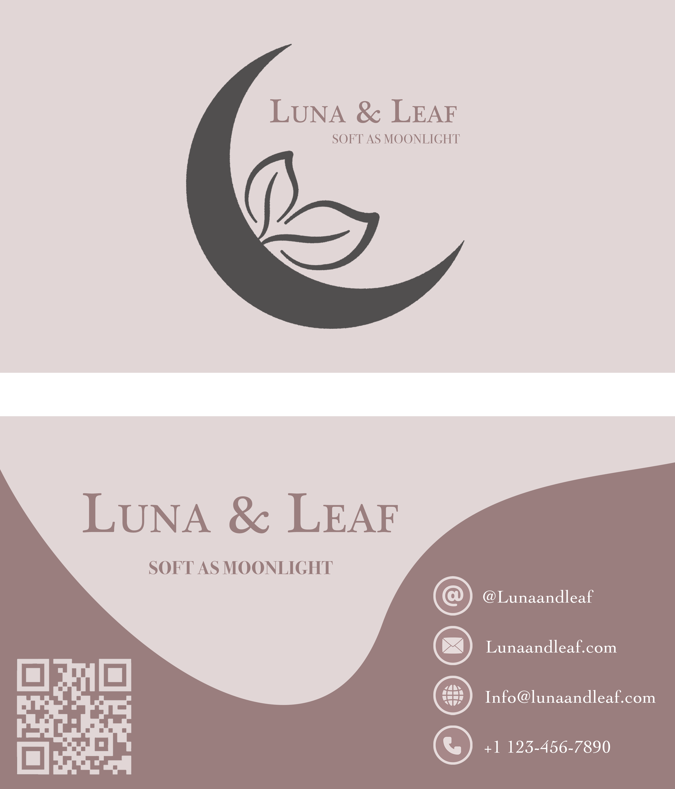
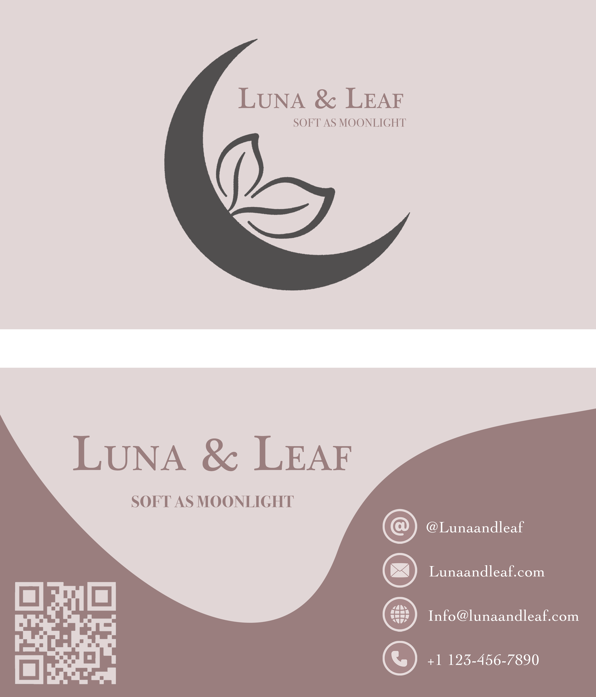

For this project, I created a branding package for Luna & Leaf, a fictional eco-friendly skincare brand. My goal was to design a clean, nature-inspired aesthetic that reflects the brand’s natural and gentle qualities. This package includes a custom logo, business card (front and back), and a promotional banner. Throughout the process, I applied a wide range of Photoshop tools and techniques to show both my technical skills and creative decision-making.
I used the Ellipse and Pen Tools to create precise shapes and flowing, organic forms, while Smart Objects allowed me to edit images non-destructively. I applied Adjustment Layers and Hue/Saturation adjustments to match colors across elements, and used layer styles, shadows, and overlays to add depth and dimension. I isolated images and vectors for precise placement, manually applied highlights and shadows to enhance detail, and carefully aligned text and elements to ensure balance, readability, and a cohesive, professional brand aesthetic.